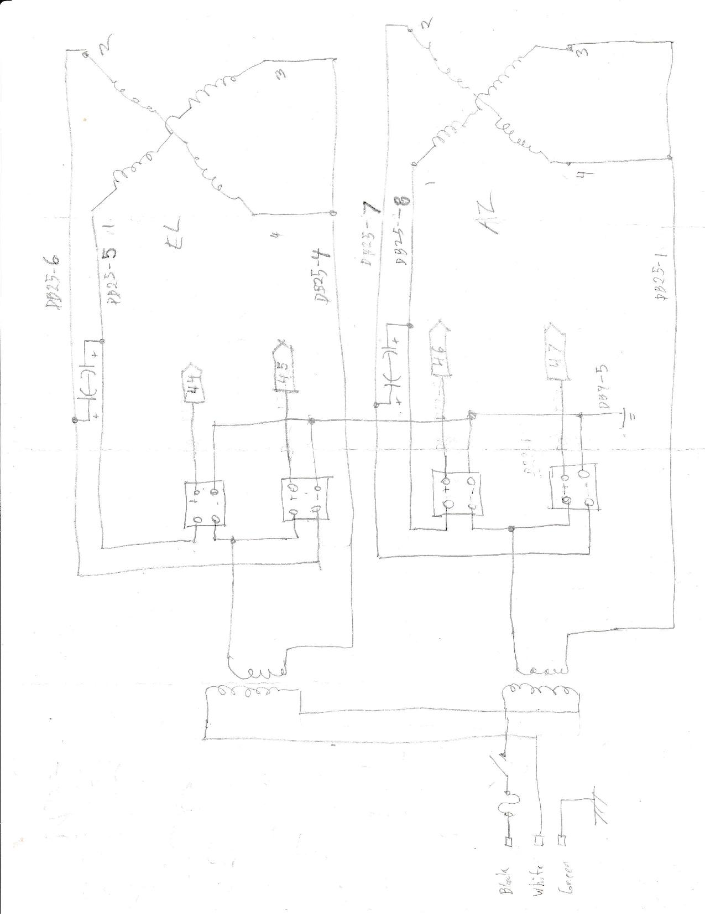
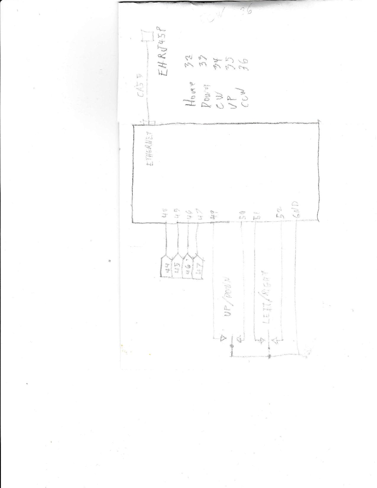

The Rotor Controller will control two rotors to steer two yagi antennas in azimuth and elevation in real time to point to low earth orbitting satellites as they transit the sky. The code is hosted in the github repository. The Link is below.


The large antenna is a 2-meter 16 element yagi that can be switched from left to right hand circular polarization. It has a beamwidth of approximately 45 degrees and a gain of 10.7 dBdc. The smaller antenna is 440 MHz 30 element yagi that can also be switched from left to rand hand polarization. The beamwidth is approximately 30 degrees and had a gain of 14.0 dBdc.

The Rotor Controller uses 4 solid state realays to switch power to the approriate windings of the Uniden 110 rotors. Not implement yest is the code to read the accelerometer and the magnetic flus compass, home switch and limits switches. The accelerometer will measure 1 G pointing down so as the elevation rotor rotates, the accelerometer can measure elevation. The magnetic flux gate will measure azimuth. Steering commands will be recieved via USB in GS-232 format from a laptop running Ham Radio Deluxe. The code is hosted in the github repository. The Link is below.
 